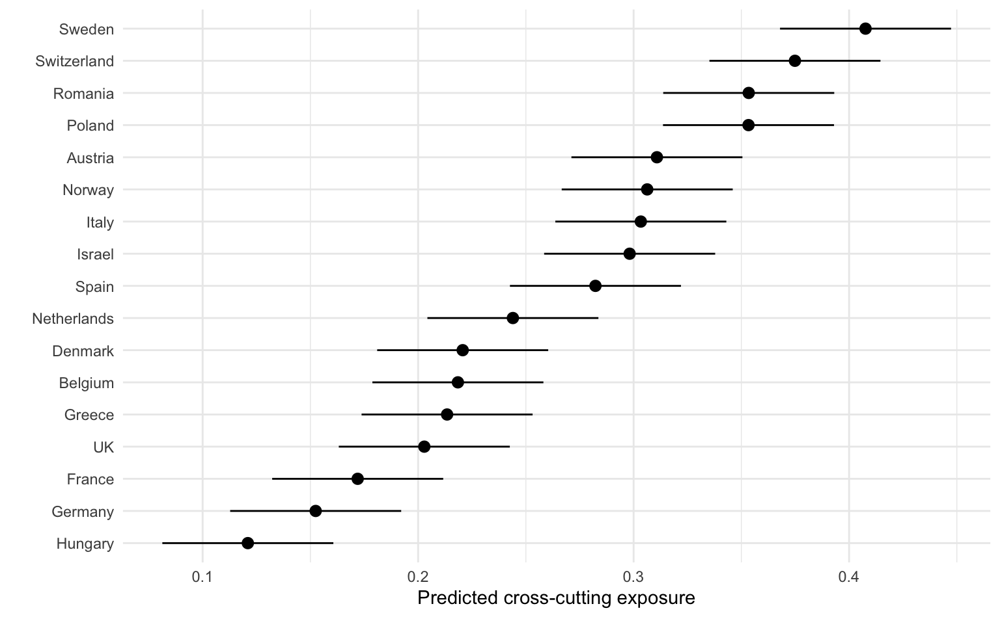
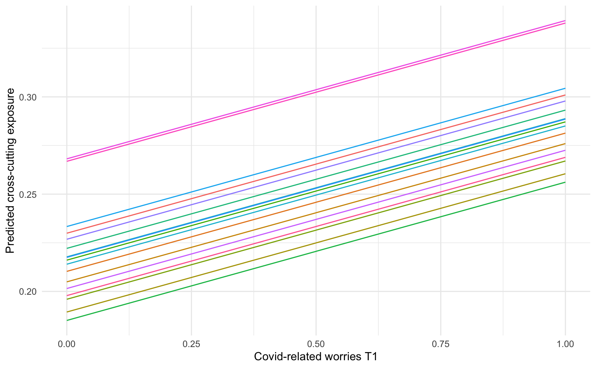
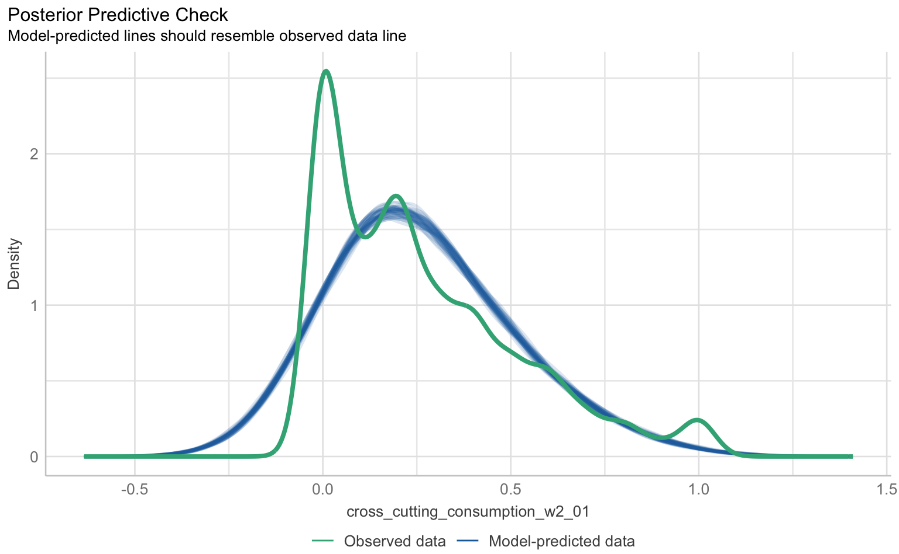
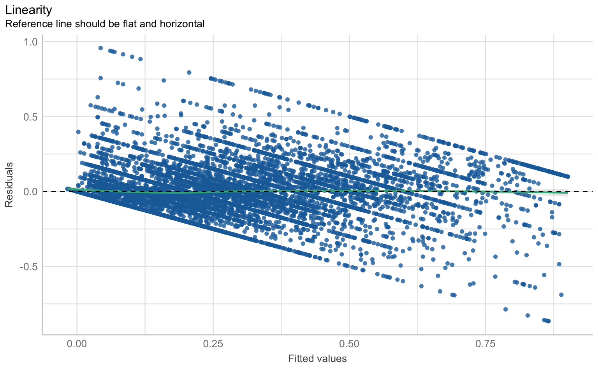
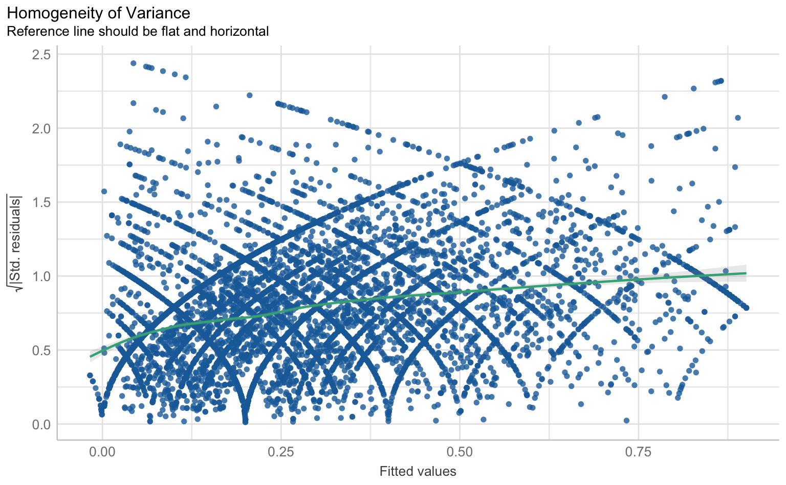
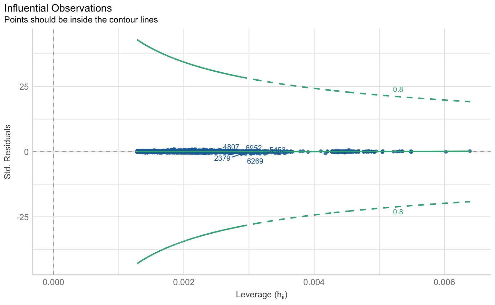
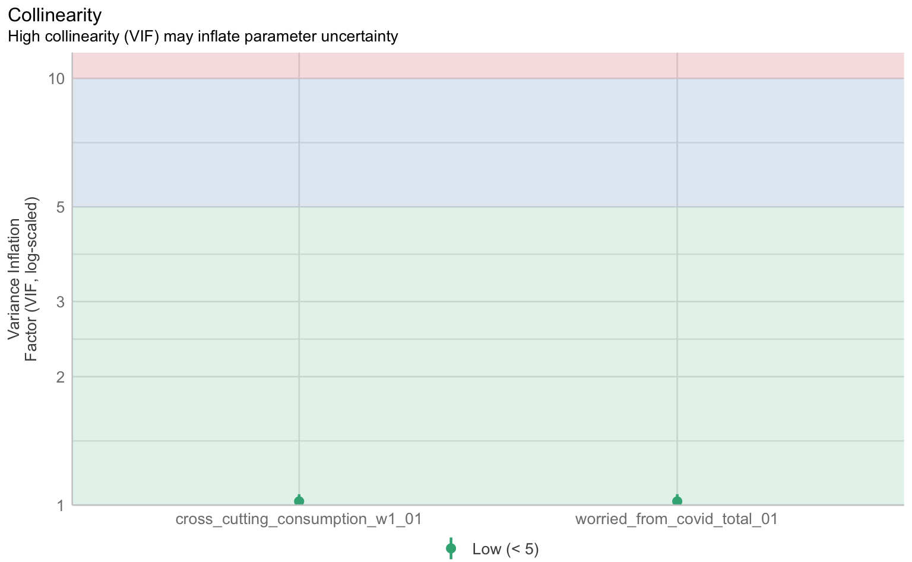
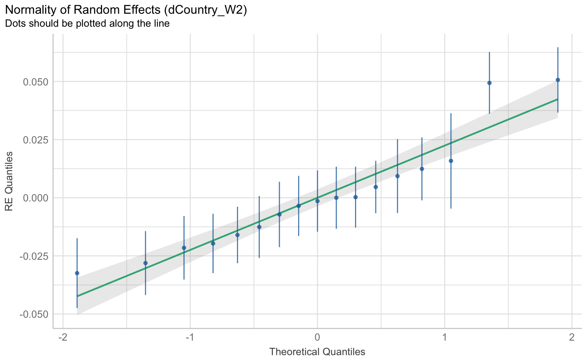
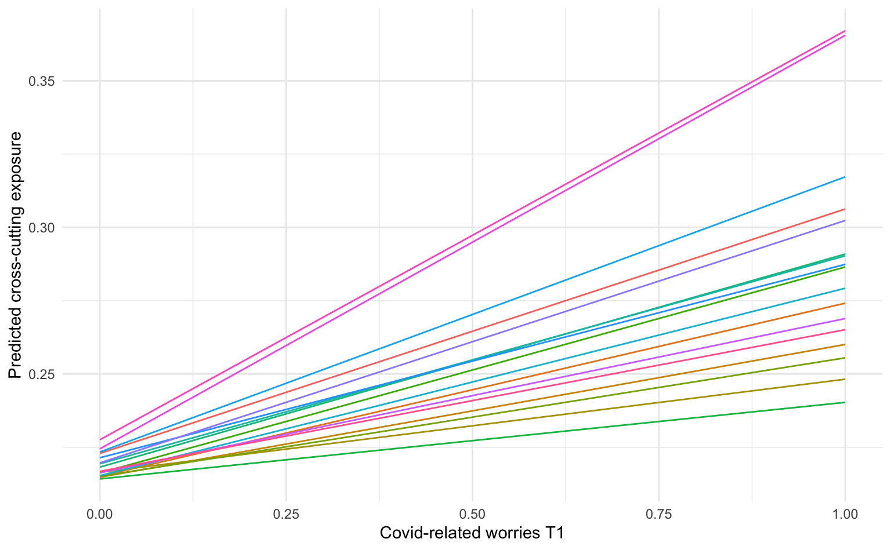

library(lme4)
library(marginaleffects)
library(tidyverse)
library(report)
theme_set(theme_minimal())6 Multilevel-Modelle
Quelle
Zoizner, A., Sheafer, T., Castro, L., Aalberg, T., Cardenal, A. S., Corbu, N., Vreese, C. de, Esser, F., Hopmann, D. N., Koc-Michalska, K., Matthes, J., Schemer, C., Splendore, S., Stanyer, J., Stępińska, A., Štětka, V., Strömbäck, J., Theocharis, Y., & Van Aelst, P. (2022). The Effects of the COVID-19 Outbreak on Selective Exposure: Evidence from 17 Countries. Political Communication, 39(5), 674–696. https://doi.org/10.1080/10584609.2022.2107745
6.1 Pakete und Daten
Wir laden zunächst wie immer die notwendigen R-Pakete. Für Multilevel-Modelle benötigen wir das lme4- und das marginaleffects-Paket. Wie immer laden wir außerdem tidyverse und report. Für eine schönere Darstellung der Plots setzen wir außerdem das Theme auf theme_minimal.
Für die Multilevel-Analyse nutzen wir den Datensatz zoizner_etal.csv. Die Autor:innen untersuchen, inwieweit Bürger:innen nach dem Ausbruch der Covid19-Pandemie Informationen aus Quellen erhalten haben, deren Inhalte sie normalerweise nicht unbedingt konsumieren. Dazu führten sie eine zweiwellige Panelbefragung in 17 Ländern vor und nach dem Ausbruch der Pandemie durch. Der Datensatz enthält unter anderem die folgenden Variablen: Cross-cutting Exposure in Bezug auf traditionelle Medien (wie häufig werden Personen mit Informationen aus Quellen konfrontiert, deren Inhalte sie normalerweise nicht konsumieren), Besorgnis über die COVID-19-Pandemie und das Land, aus dem die Befragten stammen.
Um die Cross-cutting Exposure zu bestimmen, wurden die Befragten zum einen nach der Häufigkeit der Nutzung bestimmer Medien (nie bis täglich) und ihrer politischen Einstellung (links bis rechts) gefragt. Zum anderen wurden die Medien mit Hilfe von Expert:innen nach ihrer Ideologie (links bis rechts) eingeordnet. Die politische Einstellung der Befragten wurde mit der ideologischen Einordnung der Medien und der Häufigkeit der Mediennutzung korreliert. Die Variable Cross-Cutting Exposure nimmt einen Wert zwischen 0 und 1 an (je höher, desto mehr Cross-Cutting Exposure).
d_zoizner <- read_csv("data/zoizner_etal.csv")
d_zoizner# A tibble: 14,218 × 36
...1 wave date_W2_dateformat_1day_before cross_cutting_consumption_w2_01
<dbl> <dbl> <date> <dbl>
1 1 2 2020-05-13 0.0333
2 2 2 2020-05-04 0.233
3 3 2 2020-05-04 0
4 4 2 2020-05-11 NA
5 5 2 2020-05-11 NA
# ℹ 14,213 more rows
# ℹ 32 more variables: worried_from_covid_total_01 <dbl>, age <dbl>,
# female <chr>, female_numeric <dbl>, education_numeric <dbl>,
# political_interest_w2 <dbl>, political_knowledge_w2 <dbl>,
# right_ideology_w2 <dbl>, right_ideology_w2_binary <chr>,
# news_consumption_internet_w2 <dbl>, news_consumption_socialmedia_w2 <dbl>,
# cross_cutting_consumption_w1_01 <dbl>, …Multilevel-Modelle werden für die Analyse von hierarchisch geschachtelten Daten verwendet. Diese Datenstruktur liegt hier ebenfalls vor, da Befragte aus unterschiedlichen Ländern enthalten sind. Die Befragten können in Länder geschachtelt werden, sie bilden damit eine Ebene unterhalb der Länder. Entsprechend liegen in unserem Datensatz zwei Ebenen vor: die Länder (Level 2) und die Befragten (Level 1). Unsere abhängige Variable, die Cross-Cutting Exposure zu T2,wurde auf dem Befragtenlevel (Level 1) gemessen.
Wir betrachten zunächst die Level-2-Variable (country), in dem wir uns die Anzahl der Befragten pro Land in unserer Stichprobe ausgeben lassen.
count(d_zoizner, dCountry_W2)# A tibble: 17 × 2
dCountry_W2 n
<chr> <int>
1 Austria 852
2 Belgium 764
3 Denmark 751
4 France 889
5 Germany 968
# ℹ 12 more rowsInsgesamt sind Befragte aus 17 Ländern in der Stichprobe enthalten.
Wie bei allen Analysen lohnt sich auch bei Mutlilevel-Modellen ein Blick auf die Verteilung der Outcome-Variable, in diesem Fall die Cross-Cutting Exposure zu T2 (Level 1).
d_zoizner |>
select(cross_cutting_consumption_w2_01) |>
report::report_sample()# Descriptive Statistics
Variable | Summary
-------------------------------------------------------
Mean cross_cutting_consumption_w2_01 (SD) | 0.27 (0.26)Über alle Länder hinweg beträgt die durchschnittliche Cross-Cutting Exposure zum Zeitpunkt T2 .27 (SD = .26).
6.2 Nullmodell und ICC
Zunächst berechnen wir ein Nullmodel, welches Auskunft darüber gibt, wie sich die Varianz auf die verschiedenen Ebenen verteilt. Das Modell schätzt zunächst ohne erklärende Variablen die Durchschnittswerte der Variablen cross_cutting_consumption_w2_01 und berücksichtigt dabei die zufälligen Abweichungen zwischen den Ländern (dCountry_W2).
m0_cc <- lmer(cross_cutting_consumption_w2_01 ~ 1 + (1 | dCountry_W2), d_zoizner)Diese Varianzen können wir nutzen, um den Intraklassenkorrelationskoeffizient (ICC) zu berechnen, der einen Hinweis darauf gibt, ob ein Multilevel-Modell überhaupt nötig ist.
performance::icc(m0_cc)# Intraclass Correlation Coefficient
Adjusted ICC: 0.102
Unadjusted ICC: 0.102Etwa 10% der Varianz der Cross-Cutting Exposure lässt sich ausschließlich durch Unterschiede zwischen den Ländern erklären.
Wir können uns auch die vorhergesagte Cross-Cutting Exposure für die verschiedenen Länder ausgeben lassen. Dazu berechnen wir Modelvorhersagen mit der Funktion avg_predictions().
marginaleffects::avg_predictions(m0_cc, by = "dCountry_W2") |>
as_tibble()# A tibble: 17 × 10
rowid dCountry_W2 estimate std.error statistic p.value s.value conf.low
<int> <chr> <dbl> <dbl> <dbl> <dbl> <dbl> <dbl>
1 1 Netherlands 0.244 0.0202 12.1 1.93e-33 109. 0.204
2 2 Austria 0.311 0.0202 15.4 3.45e-53 174. 0.271
3 3 France 0.172 0.0202 8.49 2.01e-17 55.5 0.132
4 4 Germany 0.152 0.0202 7.53 5.07e-14 44.2 0.113
5 5 Italy 0.303 0.0202 15.0 9.54e-51 166. 0.264
# ℹ 12 more rows
# ℹ 2 more variables: conf.high <dbl>, rowid_dedup <int>Wie wir sehen, gibt es einige Unterschiede zwischen den Ländern, in Schweden und der Schweiz ist die vorhergesagte Cross-Cutting Exposure vergleichsweise hoch, während sie in Ungarn, Deutschland und Frankreich vergleichsweise niedrig ist. Dies können wir uns auch grafisch darstellen lassen:
marginaleffects::avg_predictions(m0_cc, by = "dCountry_W2") |>
as_tibble() |>
ggplot(aes(
x = reorder(dCountry_W2, estimate), y = estimate,
ymin = conf.low, ymax = conf.high
)) +
geom_pointrange() +
coord_flip() +
labs(x = "", y = "Predicted cross-cutting exposure")
6.3 Varying Intercepts
6.3.1 Modellschätzung
Nun fügen wir dem Nullmodell zwei Prädiktoren auf Level 1 hinzu, also auf Befragtenebene. Zum einen die Cross-Cutting Exposure zu T1 (cross_cutting_consumption_w1_01 zum ersten Messzeitpunkt, also den autoregressiven Effekt), zum anderen die Bersorgnis aufgrund von Covid (worried_from_covid_total_01) . Das Modell enthält damit wieder eine Lagged Dependent Variable.
m1_cc <- lmer(cross_cutting_consumption_w2_01 ~ cross_cutting_consumption_w1_01 + worried_from_covid_total_01 +
(1 | dCountry_W2), d_zoizner)
report::report_table(m1_cc)Parameter | Coefficient | 95% CI | t(8434) | p | Effects | Group | Std. Coef. | Std. Coef. 95% CI | Fit
----------------------------------------------------------------------------------------------------------------------------------------------------
(Intercept) | 0.02 | [ 0.00, 0.03] | 1.73 | 0.083 | fixed | | 2.68e-03 | [-0.04, 0.05] |
cross cutting consumption w1 01 | 0.76 | [ 0.75, 0.78] | 103.32 | < .001 | fixed | | 0.75 | [ 0.73, 0.76] |
worried from covid total 01 | 0.07 | [ 0.05, 0.09] | 7.71 | < .001 | fixed | | 0.06 | [ 0.04, 0.07] |
| 0.02 | | | | random | dCountry_W2 | | |
| 0.16 | | | | random | Residual | | |
| | | | | | | | |
AIC | | | | | | | | | -6814.46
AICc | | | | | | | | | -6814.46
BIC | | | | | | | | | -6779.26
R2 (conditional) | | | | | | | | | 0.59
R2 (marginal) | | | | | | | | | 0.59
Sigma | | | | | | | | | 0.16Sowohl die Cross-Cutting Exposure zu T1 als auch die Besorgnis um Covid haben einen positiven sig. Effekt auf die Cross-Cutting Exposure zu T2 (p<.001), wobei ersteres wieder nur als Stabilitätskoeffizient zu interpretieren ist.
Auch für dieses Modell können wir Modellvorhersagen berechnen, hier zum Effekt der Cross-Cutting Exposure.
avg_predictions(m1_cc, variables = c("worried_from_covid_total_01", "dCountry_W2")) |>
as_tibble()# A tibble: 85 × 9
worried_from_covid_total_01 dCountry_W2 estimate std.error statistic p.value
<dbl> <chr> <dbl> <dbl> <dbl> <dbl>
1 0 Netherlands 0.214 0.00865 24.7 3.54e-135
2 0.5 Netherlands 0.250 0.00635 39.3 0
3 0.667 Netherlands 0.261 0.00619 42.2 0
4 0.833 Netherlands 0.273 0.00640 42.7 0
5 1 Netherlands 0.285 0.00696 41.0 0
# ℹ 80 more rows
# ℹ 3 more variables: s.value <dbl>, conf.low <dbl>, conf.high <dbl>Die Modellvorhersagen lassen sich dann auch wieder grafisch darstellen, wobei jedes Land einzeln dargestellt ist.
avg_predictions(m1_cc, variables = c("worried_from_covid_total_01", "dCountry_W2")) |>
as_tibble() |>
ggplot(aes(
x = worried_from_covid_total_01, y = estimate,
color = dCountry_W2, group = dCountry_W2
)) +
geom_line(show.legend = FALSE) +
labs(x = "Covid-related worries T1", y = "Predicted cross-cutting exposure")
Der positive Effekt der Besorgnis über Covid auf die Cross-Cutting Exposure zu T2 ist im vorliegenden Modell in allen Ländern gleich, d.h. in allen Ländern ist der Anstieg identisch, was sich in den parallelen Linien zeigt. Die Länder unterscheiden sich hier nur durch die Varying Intercepts, d.h. durch die unterschiedliche Ausgangswerte. Diese Annahme können wir im nächsten Modell aufheben.
6.3.2 Voraussetzungen
Auch bei Mehrebenenmodellen können wir die klassischen Regressions-Annahmen wie Linearität, Normalverteilung der Residuen, Homoskedastizität und Multikollinearität überprüfen. Hierfür nutzen wir wieder die check_model()-Funktion aus dem performance-Paket.
checks <- performance::check_model(m1_cc, panel = F)
plot(checks)$PP_CHECK
$NCV
$HOMOGENEITY
$OUTLIERS
$VIF
$QQ
[[7]]
6.4 Varying Slopes
6.4.1 Modellschätzung
Multilevel-Modelle können neben Varying Intercepts auch Varying Slopes enthalten. Kurz gesagt bilden Varying Slopes unterschiedliche Effekte einer Variable in den verschiedenen Gruppen (hier: in den Ländern) ab. In der nachfolgenden Analyse nehmen wir an, dass die Besorgnis über Covid und die Cross-Cutting Exposure zu T1 bei den Befragten nicht in allen Ländern den gleichen (positiven) Effekt auf die Cross-Cutting Exposure zu T2 hat. Die Varying Slopes fügen wir hinzu, indem wir die Variablen worried_from_covid_total_01 und cross_cutting_consumption_w1_01 in die Klammer (1 | dCountry_W2), welche die Varying Intercepts kennzeichnet, aufnehmen.
m2_cc <- lmer(cross_cutting_consumption_w2_01 ~ cross_cutting_consumption_w1_01 + worried_from_covid_total_01 +
(1 + cross_cutting_consumption_w1_01 + worried_from_covid_total_01 | dCountry_W2), d_zoizner)
report::report_table(m2_cc)Random effect variances not available. Returned R2 does not account for random effects.Parameter | Coefficient | 95% CI | t(8429) | p | Effects | Group | Std. Coef. | Std. Coef. 95% CI | Fit
---------------------------------------------------------------------------------------------------------------------------------------------------
(Intercept) | 0.02 | [0.00, 0.03] | 2.66 | 0.008 | fixed | | 3.68e-03 | [-0.05, 0.05] |
cross cutting consumption w1 01 | 0.76 | [0.75, 0.78] | 85.26 | < .001 | fixed | | 0.74 | [ 0.73, 0.76] |
worried from covid total 01 | 0.07 | [0.05, 0.09] | 5.67 | < .001 | fixed | | 0.06 | [ 0.04, 0.08] |
| 0.02 | | | | random | dCountry_W2 | | |
| 0.03 | | | | random | dCountry_W2 | | |
| | | | | random | dCountry_W2 | | |
| 0.00 | | | | random | dCountry_W2 | | |
| 0.58 | | | | random | dCountry_W2 | | |
| 0.16 | | | | random | Residual | | |
| | | | | random | dCountry_W2 | | |
| | | | | | | | |
AIC | | | | | | | | | -6819.06
AICc | | | | | | | | | -6819.04
BIC | | | | | | | | | -6748.66
R2 (marginal) | | | | | | | | | 0.59
Sigma | | | | | | | | | 0.16
Important
In der report_table() werden leider die Varianzen bzw. Standardabweichungen der variierenden Slopes und Intercepts nicht gut gelabelt, daher greifen wir hier auf summary() zurück.
summary(m2_cc)Linear mixed model fit by REML ['lmerMod']
Formula: cross_cutting_consumption_w2_01 ~ cross_cutting_consumption_w1_01 +
worried_from_covid_total_01 + (1 + cross_cutting_consumption_w1_01 +
worried_from_covid_total_01 | dCountry_W2)
Data: d_zoizner
REML criterion at convergence: -6839.1
Scaled residuals:
Min 1Q Median 3Q Max
-5.4248 -0.4616 -0.1690 0.4677 5.9361
Random effects:
Groups Name Variance Std.Dev. Corr
dCountry_W2 (Intercept) 0.0000000 0.00000
cross_cutting_consumption_w1_01 0.0004027 0.02007 NaN
worried_from_covid_total_01 0.0011544 0.03398 NaN 0.58
Residual 0.0258233 0.16070
Number of obs: 8439, groups: dCountry_W2, 17
Fixed effects:
Estimate Std. Error t value
(Intercept) 0.016574 0.006230 2.661
cross_cutting_consumption_w1_01 0.762807 0.008947 85.258
worried_from_covid_total_01 0.069850 0.012328 5.666
Correlation of Fixed Effects:
(Intr) c___1_
crss___1_01 -0.149
wrrd_f___01 -0.672 0.125
optimizer (nloptwrap) convergence code: 0 (OK)
boundary (singular) fit: see help('isSingular')Das Modell unterstellt jetzt, dass es einen Gesamt-Intercept und Slopes über alle Befragten und Länder gibt sowie länderspezifische Abweichungen davon. Der länderspezifische Effekt ist dann die Summe aus Gesamt-Slope und länderspezifischen Abweichungen. Um diese zu schätzen, gibt es eine spezielle Funktion avg_slopes() mit dem by Parameter.
marginaleffects::avg_slopes(m2_cc, variables = "worried_from_covid_total_01", by = "dCountry_W2") |>
as_tibble()# A tibble: 17 × 13
term contrast dCountry_W2 estimate std.error statistic p.value s.value
<chr> <chr> <chr> <dbl> <dbl> <dbl> <dbl> <dbl>
1 worried_fr… mean(dY… Austria 0.0833 0.0123 6.76 1.37e-11 36.1
2 worried_fr… mean(dY… Belgium 0.0590 0.0123 4.79 1.68e- 6 19.2
3 worried_fr… mean(dY… Denmark 0.0453 0.0123 3.67 2.41e- 4 12.0
4 worried_fr… mean(dY… France 0.0318 0.0123 2.58 9.99e- 3 6.65
5 worried_fr… mean(dY… Germany 0.0404 0.0123 3.28 1.04e- 3 9.91
# ℹ 12 more rows
# ℹ 5 more variables: conf.low <dbl>, conf.high <dbl>, predicted_lo <dbl>,
# predicted_hi <dbl>, predicted <dbl>Wir sehen, dass sich die geschätzten Regressionskoeffizienten für die Besorgnis über Covid zwischen den Ländern unterscheiden. Auch für dieses Modell können wir die Modellvorhersagen berechnen und grafisch darstellen.
avg_predictions(m2_cc, variables = c("worried_from_covid_total_01", "dCountry_W2")) |>
as_tibble() |>
ggplot(aes(
x = worried_from_covid_total_01, y = estimate,
color = dCountry_W2, group = dCountry_W2
)) +
geom_line(show.legend = FALSE) +
labs(x = "Covid-related worries T1", y = "Predicted cross-cutting exposure")
Im Unterschied zum vorherigen Modell sehen wir nun länderspezifische Ausgangswerte und Anstiege der Regressionsgeraden.
6.4.2 Modellvergleich Fixed vs. Varying Slopes
Um unsere beiden Modelle zu vergleichen, können wir die anova()-Funktion nutzen, um einen Likelihood-Ratio-Test durchzuführen.
anova(m1_cc, m2_cc)Data: d_zoizner
Models:
m1_cc: cross_cutting_consumption_w2_01 ~ cross_cutting_consumption_w1_01 + worried_from_covid_total_01 + (1 | dCountry_W2)
m2_cc: cross_cutting_consumption_w2_01 ~ cross_cutting_consumption_w1_01 + worried_from_covid_total_01 + (1 + cross_cutting_consumption_w1_01 + worried_from_covid_total_01 | dCountry_W2)
npar AIC BIC logLik deviance Chisq Df Pr(>Chisq)
m1_cc 5 -6838.4 -6803.2 3424.2 -6848.4
m2_cc 10 -6845.5 -6775.1 3432.8 -6865.5 17.176 5 0.004178 **
---
Signif. codes: 0 '***' 0.001 '**' 0.01 '*' 0.05 '.' 0.1 ' ' 1Der Test zeigt an, dass das Varying Slopes Modell signifikant besser ist als das Varying Intercept Modell (p<.001), d.h. es gibt signifikante Effektheterogenität bezüglich der Prädiktoren Cross-cutting Exposure zu T1 und Besorgnis über Covid.
6.5 Level-2 Prädiktoren
Bislang haben wir mit cross_cutting_consumption_w1_01 und worried_from_covid_total_01 lediglich Level-1-Prädiktoren für unsere Analyse verwendet. Es ist aber ebenso möglich, einen Level-2-Prädiktor in das Modell aufzunehmen, um die Unterschiede zwischen den Gruppen zu erklären. So könnte der Schweregrad von Covid19 (die Anzahl der Fälle im Land) die Cross-Cutting Exposure beeinflussen. Deshalb fügen wir die Variable confirmed_per_100k in die Formel ein.
m3_cc <- lmer(cross_cutting_consumption_w2_01 ~ cross_cutting_consumption_w1_01 + worried_from_covid_total_01 + confirmed_per_100k + (1 + cross_cutting_consumption_w1_01 + worried_from_covid_total_01 | dCountry_W2), d_zoizner)
report::report_table(m3_cc)Parameter | Coefficient | 95% CI | t(8428) | p | Effects | Group | Std. Coef. | Std. Coef. 95% CI | Fit
----------------------------------------------------------------------------------------------------------------------------------------------------
(Intercept) | 0.01 | [-0.01, 0.04] | 1.21 | 0.227 | fixed | | 3.77e-03 | [-0.05, 0.05] |
cross cutting consumption w1 01 | 0.76 | [ 0.74, 0.78] | 78.17 | < .001 | fixed | | 0.74 | [ 0.73, 0.76] |
worried from covid total 01 | 0.07 | [ 0.05, 0.10] | 5.69 | < .001 | fixed | | 0.06 | [ 0.04, 0.08] |
confirmed per 100k | 3.38e-06 | [ 0.00, 0.00] | 0.09 | 0.932 | fixed | | 1.85e-03 | [-0.04, 0.04] |
| 0.02 | | | | random | dCountry_W2 | | |
| 0.03 | | | | random | dCountry_W2 | | |
| 0.04 | | | | random | dCountry_W2 | | |
| -0.77 | | | | random | dCountry_W2 | | |
| -0.34 | | | | random | dCountry_W2 | | |
| 0.87 | | | | random | dCountry_W2 | | |
| 0.16 | | | | random | Residual | | |
| | | | | | | | |
AIC | | | | | | | | | -6801.93
AICc | | | | | | | | | -6801.90
BIC | | | | | | | | | -6724.49
R2 (conditional) | | | | | | | | | 0.60
R2 (marginal) | | | | | | | | | 0.58
Sigma | | | | | | | | | 0.16Wie wir sehen, hängt die Anzahl der Fälle im Land nicht signifikant mit der Cross-Cutting Exposure zusammen (p >.05).
Weiterführende Materialien
Weitere detaillierte Beispiele mit R-Code und Daten finden sich in den Materialien zur Vorlesung Anwendungsorientierte Analyseverfahren, u.a. zu
- Varying Intercept und Slope Modellen
- Modellvorhersagen und -visualisierungen
6.6 Glossar
| Funktion | Definition |
|---|---|
| lme4::lmer | Multilevel-Modelle schätzen |
| performance::check_model | Modellannahmen prüfen |
| performance::icc | Intraklassenkorrelationskoeffizient berechnen |
6.7 Hausaufgabe
- Wie beeinflusst die Angst vor Covid (
worried_from_covid_total_01) und das Alter der Befragten (age) auf Befragtenebene sowie die Anzahl der Fälle im Land (confirmed_per_100k) auf Länderebene die Nachrichtennutzung auf Social Media (news_consumption_socialmedia_w2)? - Schätzen Sie das ganze als REWB-Modell. Interpretieren Sie die Ergebnisse und vergleichen mit dem RE-Modell aus Aufgabe 1.